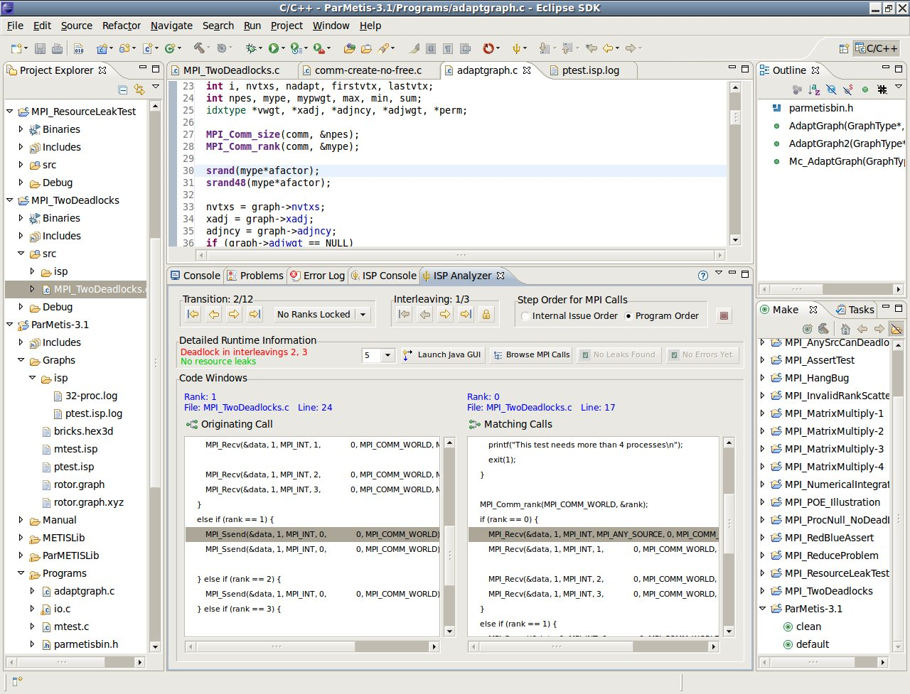
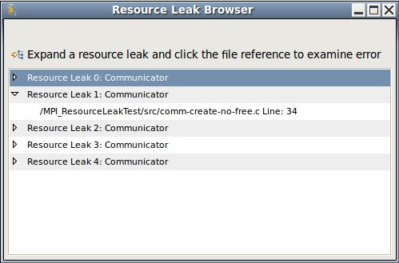

|
|
Analyzer View |
Before fomally verifying an MPI C program, you need to set the number of processes for a particular run of ISP.
An input dialog will allow you to enter the desired number of processes, which will persist until you change the value again.
If the Analyzer View is already visible, the number of processes can also be set from the down combo-box in the Analyzer View's Detailed Runtime information group for the next Analyzer run.
When you fomally verify an MPI C program, the Analyzer View will automatically be brought to the foreground. Any of the following will enable the source code analyzer:

This is a unique user interface which visually displays the output that ISP generated by highlighting lines in the source file. It shows both the current MPI call, and any matching point-to-point or collective operation. It also allows the user to examine MPI calls for a particular rank with an easy to use Rank Lock feature.
The source code analyzer also allows examination of flagged errors with one click. The Browse Errors feature will open a shell that allows highlighting of individual source code lines involved with the error within the Eclipse editor. In addition, it offers features to browse calls by rank and by interleaving as well as listing any resource leaks found in the source code. One click on the flagged leak in the Resource Leak Browser takes the user to the suspect line of code in the Eclipse editor.
The image below shows what the Code Analyzer View should look like along with an explanation of its components.
A transition is essentially an abstraction of an MPI call along with information regarding how the call effects the state of the system. The top left section (aptly titled "Transitions") lets the user change which transition is currently being viewed.
The buttons from left to right let the user navigate to the:Just to the right of the transition/interleaving buttons is a drop down menu that lets the user lock a rank. If no ranks are locked then the calls will be stepped through in issue order or program order on the preference setting related to this feature (Step Calls in Issue Order). The Lock Rank option allows the user to only step to the previous and next call of a specific rank, instead of all the ranks
An interleaving is a schedule of transitions, or in other words a possible ordering of MPI calls issued by the scheduler. The top right section (titled "Interleavings") lets the user change which interleaving is being viewed. Doing this will automatically move to the first transition of the new interleaving. These buttons let the user choose which interleaving is currently being navigated.
The buttons from left to right let the user navigate to the:An interleaving is a schedule of transitions, or in other words a possible ordering of MPI calls issued by the scheduler. The top right section (titled "Interleavings") lets the user change which interleaving is being viewed. Doing this will automatically move to the first transition of the new interleaving. These buttons let the user choose which interleaving is currently being navigated.
The radio buttons from left to right do the following:On the far left are two labels. The one on the top explains how the program terminated (whether by a deadlock, assertion violation, or without error). The bottom one reports whether or not any resource leaks were found. For both of these messages, the text is green if the nothing is wrong and red when it is reporting a problem.
The first drop down combo-box shows the current number of processes and lets the user conveniently choose a new value for the next Analyzer run.
 This button will launch ispUI, a.k.a. JavaGUI, a graphical tool
for examining all processes at once and their interactions on a more global level. Please reference the
JavaGUI page for a detailed overview on its use.
This button will launch ispUI, a.k.a. JavaGUI, a graphical tool
for examining all processes at once and their interactions on a more global level. Please reference the
JavaGUI page for a detailed overview on its use.
 Browse MPI Calls
Browse MPI Calls
This opens a new window that shows all MPI Calls and groups them first by the rank that issued
them and then by the Interleaving they are found in.

 Browse Leaks
Browse Leaks
If no resource leaks were found then this button is disabled and the text changes to No Leaks Found
If there are any leaks then clicking on it will prompt a new window that lists all leaks.If you
click on a leak in this new window, the source file will be opened in the editor and the line where
the leak is found will be selected (this is done to help you find and fix the problem).

 Browse Errors
Browse Errors
This button is also disabled if there were no assertion violations or deadlocks. Clicking on it brings up
a shell that allows highlighting of individual source code lines involved with the error within the Eclipse editor.
Some errors like deadlocks involve multiple lines of code.
At the top of this section are two labels that explain the MPI Call(s) currently being viewed. On the left is the explanation for the originating call and on the right is the explanation of the matching call (for example an MPI Send may match with an MPI Recv and in such a situation the Send will be described on the left and the Recv on the right). Many MPI Calls do not match with anything (like Barrier or Finalize for example) in this situation the label on the right will be blank.These labels have three pieces of information. From top to bottom they are: Rank (aka process id), the file and line number where it is found, and the complete MPI Call as it appears in the source file.
Below these two labels are two windows that both hold complete copies of the source file. These are used to visually show where the calls came from and how they match. In the left window the originating call is highlighted and on the right the matching call is highlighted.
Note: This same functionality can be obtained through the context and pull-down menus for the view.
Back to Top | Back to Table of Contents
School of Computing * 50 S. Central Campus Dr. Rm. 3190 * Salt Lake City, UT
84112 * isp-dev@cs.utah.edu
License